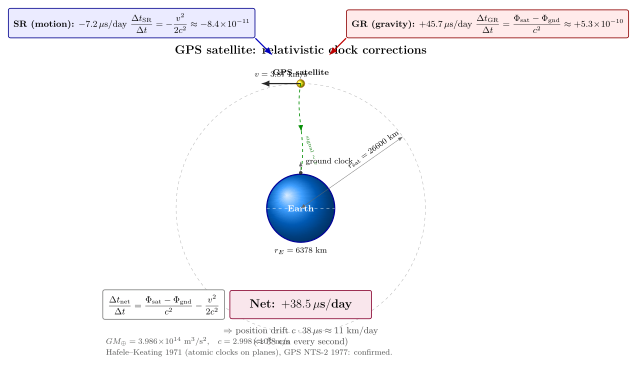

GPS 一天偏 38 微秒, 你怎么校正?
每次你打开手机地图, 屏幕中央那个蓝点漂移到几米精度, 你都在无意识地使用爱因斯坦. GPS 不是"用到一点 GR", 而是不修正 GR 就完全不能工作的系统 — 这件事情在 1977 年系统设计阶段曾引发过激烈争论, 我们后面会讲. 上一节我们花了一整篇推 Mercury 近日点进动 $43''$/世纪, 那是个需要望远镜跟踪几十年才能积累出来的微小偏离. 这一节的尺度更夸张: 同一套 Schwarzschild 度规, 应用到地球弱场 + 卫星轨道, 给出每天 38 微秒的修正 — 这个数大到它的一阶贡献必须在每秒都被考虑.
我们会按这条路径走: 先把 SR 时间膨胀 (运动钟慢) 与 GR 引力时间膨胀 (深势阱里钟慢) 的两个一阶公式写下来; 然后代入 GPS 卫星的实际参数, 算两个数; 然后看怎么把两件事都拽进同一个 Schwarzschild 度规里, 一步推出净修正; 最后聊一下这个工程上是怎么"预补偿"的, 以及它的历史包袱.
一、两个一阶效应: 运动慢 vs. 高处快
把读者熟悉的 SR 公式 (运动钟比静止钟慢) 写一下. 在地心惯性系 (ECI) 里, 一颗以速度 $v$ 运动的钟, 它的固有时 $\tau$ 与坐标时 $t$ 的关系是 $d\tau = dt\sqrt{1-v^2/c^2}$. 取一阶 ($v\ll c$):
$$ \frac{\Delta t_{\rm SR}}{\Delta t} \;=\; -\frac{v^2}{2c^2}. \tag{1} $$
负号: 运动钟慢. 把 GPS 卫星的轨道速度 $v=3874$ m/s 代进去:
$$ \frac{v^2}{2c^2} \;=\; \frac{(3874)^2}{2\cdot(2.998\times 10^8)^2} \;\approx\; 8.35\times 10^{-11}. $$
一天有 $86400$ 秒, 所以一天的累积偏差 $\approx 8.35\times 10^{-11}\cdot 86400$ s $\approx 7.2\times 10^{-6}$ s $= 7.2$ μs. 卫星钟一天因为这条原因慢 $7.2$ 微秒.
地面观察者也在动 — 地球自转给地面赤道一个 $\approx 465$ m/s 的切向速度. 但我们关心的是卫星钟相对地面钟的差, 在 ECI 系里把两者的 $-v^2/(2c^2)$ 都减掉, 净 SR 修正主要由卫星速度贡献 (地面项小一个数量级以上). 严格的 GPS 文献用的就是 ECI 系, 让两个钟都参考同一个坐标时, 这一点很关键 — 一个常见的错误是把卫星钟与地面钟用 SR 双方各自"看"对方变慢, 那是一对静止与运动钟的对称悖论, 不适用于 GPS 这种存在外部惯性系的场景.
另一个一阶效应是 GR 引力时间膨胀 — 我们在第 02 节里提过, 在弱场极限下 Schwarzschild 度规给出
$$ \frac{\Delta t_{\rm GR}}{\Delta t} \;=\; \frac{\Phi_{\rm sat}-\Phi_{\rm gnd}}{c^2}. \tag{2} $$
这里 $\Phi=-GM/r$ 是牛顿引力势 (深处更负). 卫星位置势能比地面大 (更接近零), 所以 $\Phi_{\rm sat}\gt \Phi_{\rm gnd}$, 卫星钟相对地面钟快. 直觉是对的: 你在山顶上, 比我在山脚下钟快一点. 把数字代进去, $r_E=6378$ km (地表), $r_{\rm sat}=26600$ km (从地心起算的轨道半径, 等于地球半径加海拔 20200 km), $GM_\oplus=3.986\times 10^{14}$ m³/s²:
$$ \frac{GM_\oplus}{c^2}\left(\frac{1}{r_E}-\frac{1}{r_{\rm sat}}\right) \;=\; \frac{3.986\times 10^{14}}{(2.998\times 10^8)^2}\left(\frac{1}{6.378\times 10^6}-\frac{1}{2.66\times 10^7}\right) \;\approx\; 5.29\times 10^{-10}. $$
一天累积 $5.29\times 10^{-10}\cdot 86400$ s $\approx 45.7$ μs. 卫星钟一天因这条原因快 $45.7$ 微秒.
二、净 38 微秒, 与不修正的 11 公里漂移

把两条加起来:
$$ \boxed{\;\frac{\Delta t_{\rm net}}{\Delta t} \;=\; \frac{\Phi_{\rm sat}-\Phi_{\rm gnd}}{c^2} \;-\; \frac{v_{\rm sat}^2}{2c^2} \;\approx\; 5.29\times 10^{-10} \;-\; 8.35\times 10^{-11} \;\approx\; 4.46\times 10^{-10}.\;} $$
一天 $86400$ s 后, 累积差 $\approx 4.46\times 10^{-10}\cdot 86400$ s $\approx 38.5$ μs. 卫星钟比地面钟一天快约 38 微秒. 这是 GPS 工程师每天面对的那个数字.
不修正会怎么样? GPS 的工作原理是: 卫星广播自己的时间戳与位置, 地面接收机比对来自至少 4 颗卫星的信号到达时间, 通过三角定位反推自己的 $(x,y,z,t)$. 信号以光速传播, 所以钟的偏差直接换算成距离误差: $\Delta x=c\cdot\Delta t$. $38$ 微秒乘以光速 $3\times 10^8$ m/s 等于 $11400$ m, 也就是 每天漂 11.4 km. 一小时也有 $\approx 480$ m, 一分钟 $\approx 8$ m, 每秒 漂约 $38$ cm. 现代 GPS 的标称精度是 $\sim 3$ m, 这意味着每秒的相对论修正都不能被忽略.
这个估算还忽略了几条更精细的效应, 全在 GPS 系统手册里:
- 轨道偏心率: 真实 GPS 轨道有 $e\sim 0.01$ 的偏心率, 远地点钟相对近地点钟会有 $\sim 46$ ns 的额外摆动, 接收机软件里用 Sagnac/eccentricity 修正.
- 地面接收机也在转: 地球自转给赤道一个 $465$ m/s, 对接收机也有 SR 修正, 这一项嵌在 ECI ↔ ECEF 坐标转换里.
- Sagnac 效应: 信号在传播过程中, 地球自转让接收点相对发射时刻"挪了几十米", 在解 $(x,y,z,t)$ 的方程时必须加 Sagnac 项.
- 电离层与对流层延迟: 与相对论无关, 但同样几十纳秒量级的修正.
这些都不是相对论的"二阶修正", 而是同样需要在系统里硬编码的同等量级的工程修正. 但 38 μs/day 这个最大头的偏置, 是相对论独有的.
三、统一推导: 直接从 Schwarzschild 度规出发
上面我们把 SR 与 GR 当成两件独立的事拼起来. 这是正确的一阶图像, 但更优雅的做法是从弱场 Schwarzschild 度规直接读出来 — 我们在第 12-13 节已经导出过它的牛顿极限. 度规
$$ ds^2 \;=\; -\left(1+\frac{2\Phi}{c^2}\right)c^2\,dt^2 + \left(1-\frac{2\Phi}{c^2}\right)d\vec r^{\,2}, $$
对一个沿轨道运动的钟, 它的固有时元是
$$ d\tau \;=\; \sqrt{-ds^2/c^2}\bigg|_{\rm timelike} \;=\; dt\,\sqrt{1+\frac{2\Phi}{c^2}-\frac{v^2}{c^2}\left(1-\frac{2\Phi}{c^2}\right)}. $$
展开到一阶 ($\Phi/c^2$ 与 $v^2/c^2$ 都是 $\sim 10^{-10}$ 量级, 远小于 1):
$$ \frac{d\tau}{dt} \;\approx\; 1 + \frac{\Phi}{c^2} - \frac{v^2}{2c^2}. $$
把两个钟的速率比 ($\tau_{\rm sat}$ vs. $\tau_{\rm gnd}$) 相比, 一阶项就是公式 (1)+(2). 我们没有"加" SR 与 GR — 它们本来就在同一个度规里, 是同一件事的两个不同分量. 这一点对建立直觉很重要: GR 不是 SR 的补丁, GR 包含 SR, SR 是 GR 在 $\Phi=0$ 时的特例.
顺便注意: 我们这里的 SR 修正用了 ECI 系下的卫星速度, 不是从地面"看"的速度. ECI 是一个良定义的局部惯性系 (在地球周围弱场近似下), 在它里面 SR 的判定 — 谁是"运动的" — 没有歧义. 这就是为什么 GPS 文档总在强调 ECI 这个参考系: 让两个钟都对照同一个坐标时, 把 SR 的"对称性悖论"消除掉.
四、工程实现: 出厂时把卫星钟拨慢
知道 GPS 卫星钟一天比地面钟快 $38$ μs, 工程师怎么处理? 答案漂亮得像一个段子: 在卫星上天之前, 把它的钟在工厂里拨慢一点点. 具体说, GPS 卫星上的铷/铯钟标称频率是 $10.23$ MHz, 工程师把它调到
$$ f_{\rm fly} \;=\; 10.23\,\text{MHz}\cdot(1 - 4.46\times 10^{-10}) \;\approx\; 10.22999999543\,\text{MHz}. $$
一进入轨道, 这个被人为"做慢"的频率, 加上 $+4.46\times 10^{-10}$ 的相对论增益, 正好等于地面 $10.23$ MHz. 出厂时拨慢, 上天后自动补回 — 一行频率修正, 几行接收机代码 (处理偏心率与 Sagnac), 整个相对论修正就嵌进了一个工程系统的最底层.
这件事的历史有点尴尬. GPS 在 1973 年立项, 第一颗原型卫星 Block I-1 (NTS-2) 1977 年发射. 系统设计阶段, 部分工程师 (与一两位航天高层) 怀疑相对论效应是否真的存在 (或是否真的有这么大), 他们坚持双轨设计: 卫星上的钟既能按预补偿频率运行, 也能切回标称频率, 由地面确定到底要不要这个修正. NTS-2 升空后第 20 天打开钟, 测量结果与广义相对论预言一致到当时仪器的精度内 ($\sim 1\%$). 此后所有 GPS 卫星都默认带预补偿. 这是相对论第一次在工程合同的功能列表里胜出.
插一段更老的历史. 1971 年 10 月, Joseph Hafele 与 Richard Keating 把四台 HP 5061A 铯原子钟搬上民航客机, 一架向东绕地球飞一圈 ($\approx 41$ 小时), 一架向西绕一圈 ($\approx 49$ 小时), 与 USNO 留在地面的参考钟比对. 向东飞 (顺地球自转, 速度更大) 那台钟"少走"了 $-59\pm 10$ ns, 向西飞那台"多走"了 $+273\pm 7$ ns; SR + GR 联合预言分别是 $-40\pm 23$ ns 与 $+275\pm 21$ ns. 实验与理论符合到 $\sim 10\%$ 精度, 这是第一次直接用宏观钟检验时间膨胀. Hafele-Keating 实验的精度后来被 Pound-Rebka 落塔实验、Vessot-Levine 火箭重力红移实验 (1976, 与 GR 预言符合到 $1.4\times 10^{-4}$ 精度) 远远超过, 但在 1971 年, 这是相对论从"原理"踏进"日常工程"的第一步.
今天, 你随便打开一台手机, 它每秒都在做爱因斯坦 1915 年方程的近似解. 这件事的可怕之处不在精度本身 (光学钟实验室里能测到 $10^{-19}$, 远超 GPS 所需), 而在于 — 我们日常依赖的导航、电网时间同步、金融交易高频时间戳、地震定位、深空探测 — 几乎所有需要 nanosecond 量级时间标定的工程系统, 都在默默地使用相对论. GR 已经从"基础物理"变成了 "infrastructure".
五、视野: 还有多少处用到了它?
把 GPS 这个例子推广开, 现代社会里 GR 修正不可忽略的工程系统已经不止一个:
(a) 其他 GNSS. 俄罗斯 GLONASS、欧盟 Galileo、中国北斗 — 全部都做相同的预补偿, 数字略有差异 (轨道半径与海拔不同). Galileo 的 $f_{\rm fly}$ 修正约为 $4.5\times 10^{-10}$, 与 GPS 数量级一致.
(b) VLBI 与深空网. 甚长基线干涉测量地球自转参数 (LOD, 极移) 时, 站点钟之间的引力红移差 (因海拔不同) 必须修正; NASA 深空网 (DSN) 用三个分布全球的 70 m 天线给行星探测器测距, 时间同步必须做 GR 修正.
(c) 相对论大地测量学. 用光学钟测量两点之间的引力势差 — $\Delta\Phi=c^2\Delta f/f$. 现在的光学锶钟稳定度 $\sim 10^{-19}$, 相当于测量 1 cm 高度差的能力. 2018 年 Takano 等人在东京 Skytree 上下做了这个实验, 直接把相对论从"修正项"变成"测量工具".
(d) 金融与电网. 高频交易需要 microsecond 量级时间戳, 北美电网频率同步需要 ms 量级, 都用 GPS 时间, 都"自动"享有 GPS 的 GR 修正成果.
(e) 未来: 引力波探测器的钟同步、月球 GPS 系统 (NASA 的 Lunar Communication and Navigation, 月球 $g$ 比地球小 6 倍, 修正系数完全不同)、Mars 表面定位 — 每一个新场景都需要重新算一遍这个 $\Delta\tau/\Delta t$. 这就是为什么我们一边讨论黑洞一边花一节篇幅讲 GPS: 它把"广义相对论"这件事从黑板拉到供电网.
小结
这一节我们把 Schwarzschild 度规的弱场极限 — 第 12-13 节那条 $g_{tt}=-(1+2\Phi/c^2)$ — 直接代到 GPS 卫星上, 在公式 (1) 与 (2) 给出两个一阶效应: 运动让卫星钟慢 $-7.2$ μs/day (SR), 高引力势让它快 $+45.7$ μs/day (GR), 净 $+38.5$ μs/day. 不补偿这个偏置, 一天就会漂 $\approx 11$ km, 一秒就会漂 $\approx 38$ cm — 远大于 GPS 标称的米级精度. 工程师的应对方法漂亮: 在卫星出厂时把铷/铯钟的频率 $10.23$ MHz 拨慢 $4.46\times 10^{-10}$, 上天后自动补回. 1977 年 NTS-2 升空 20 天的实测确认了这个修正系数, 此后 GPS / GLONASS / Galileo / 北斗都默认带它. 1971 年 Hafele-Keating 把铯钟搬上飞机绕地球飞一圈, 提前用宏观钟验证了同一件事. 现代社会的导航、电网时间、金融、深空通信、相对论大地测量学, 全部默默使用这个 $4.46\times 10^{-10}$. 广义相对论已经从"原理"走进了 infrastructure. 下一节我们换一个尺度: LIGO 在 2015 年 9 月 14 日测到两颗黑洞合并的引力波 — 同一套度规理论, 给出的是 $h\sim 10^{-21}$ 的应变信号, 一台 4 km 干涉仪需要测出比质子直径小一千倍的距离差. 那就是引力波探测器的故事.
▲